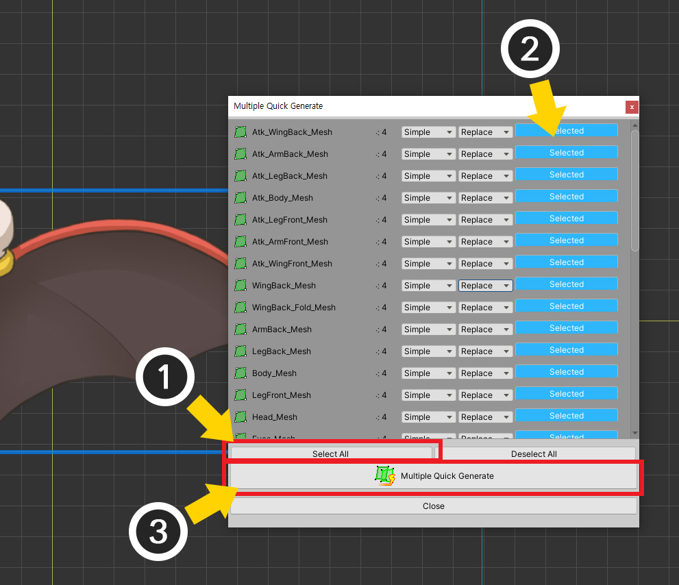
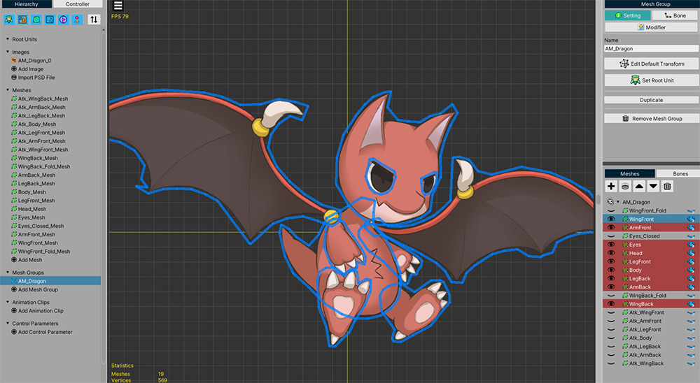

AnyPortrait > Manual > Generate Multiple Meshes Automatically
Generate Multiple Meshes Automatically
1.3.4
The feature to automatically generate meshes can save you a lot of time.
If you generate multiple meshes automatically in batches, you will be able to work more efficiently.
For auto-meshing, please see Related page.

(1) Select the mesh.
(2) Select the Setting tab.
(3) Click the Multiple Quick Generate button.
(4) A dialog box appears where you can create meshes in a batch.

1. Name of the mesh
2. The number of vertices in the mesh.
3. The option for how many vertices to create.
4. If the vertex already exists, you can choose whether to replace it entirely (Replace) or append it (Append).
5. Whether to auto-generate.
6. You can select all meshes or deselect all meshes.
7. According to the settings, the target meshes are generated in batches.

For this example, let's select all meshes and generate them.
All generation options were set to "Simple", "Replace" in bulk.
(1) Press the Select All button.
(2) All meshes are selected.
(3) Click the Multiple Quick Generate button to generate all meshes.

You can see that the meshes were all created in batches.